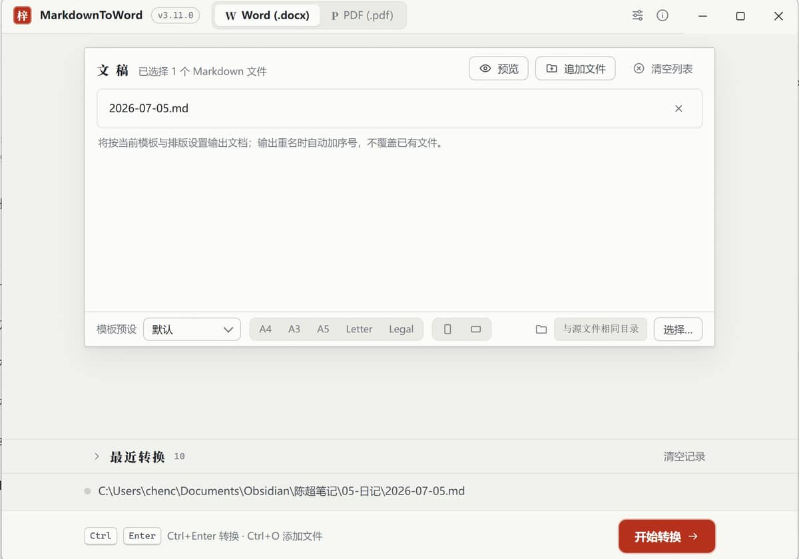
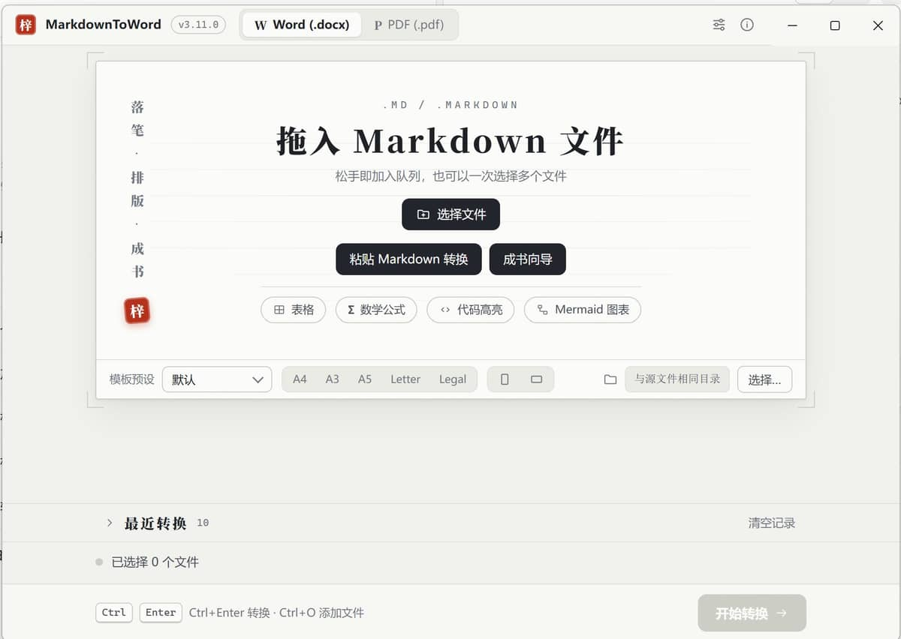
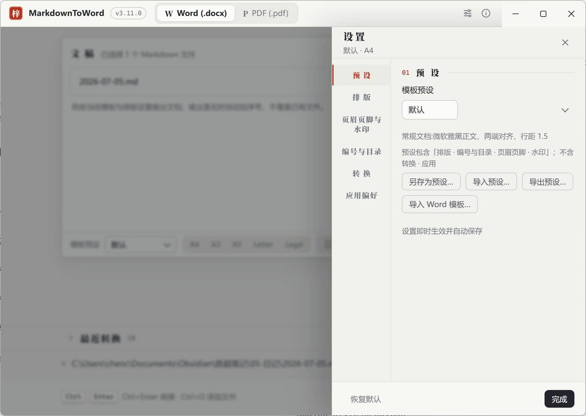
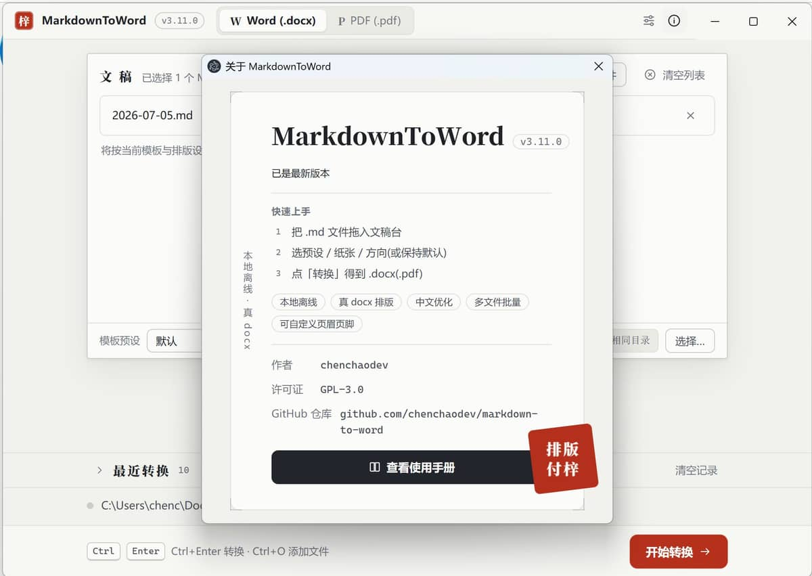
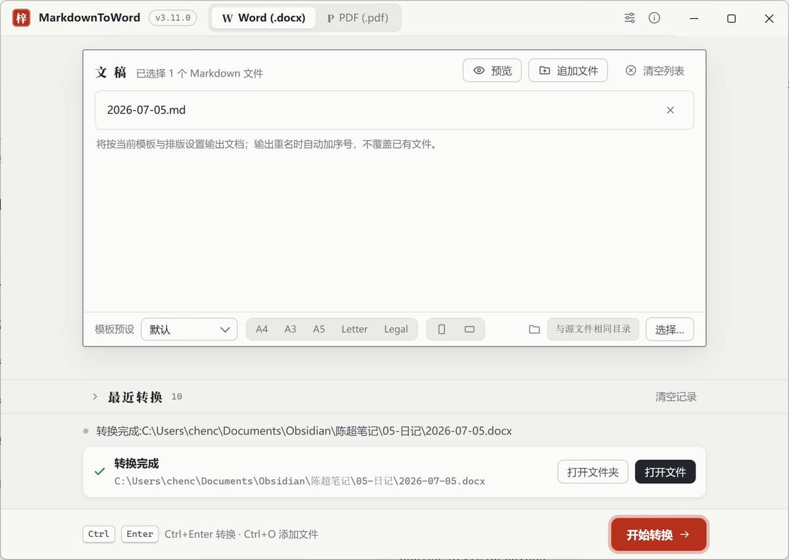

Markdown 转 Word / PDF 的本地桌面工具。文件不上传，离线可用；输出真正的 .docx 文档，中文排版可控。支持剪贴板直转、七步成书向导、AI 清理、Obsidian 兼容。 A local desktop tool that converts Markdown to Word / PDF. No uploads, fully offline. Produces real .docx files with controllable Chinese typesetting. Supports clipboard convert, book wizard, AI cleanup, and Obsidian compatibility.
文件始终在本机处理，无需联网，无需上传。断网也能正常转换。 Files are processed locally — no internet required, no uploads. Works fully offline.
输出标准 Word 文档，不是改后缀的网页。WPS 与 Microsoft Word 均可正常打开。 Produces standard Word documents, not renamed HTML. Opens in WPS and Microsoft Word without issues.
字体字号行距缩进、章节/题注/公式自动编号、目录、封面、页眉页脚页码，排版参数可逐项调节。学术排版支持公式交叉引用与图/表/章节跳转。 Fonts, sizes, line spacing, indentation, auto-numbered headings/captions/equations, TOC, cover page, headers, footers, and page numbers — all adjustable. Academic support includes equation cross-references and figure/table/section jumps.
单文件、批量、合并三种模式。多个 Markdown 可一次转出或合并为一个文档，重名文件自动加序号。 Single-file, batch, and merge modes. Convert multiple Markdown files at once or combine them into one document. Existing outputs are auto-renamed.
七步引导式成书——串联模板预设、页眉页脚、水印、合并、封面页，全程无需打开设置面板。主界面空态「粘贴 Markdown 转换」，不必先存文件。 Seven-step guided book creation — chain template presets, headers/footers, watermarks, merge, and cover pages without opening settings. Paste Markdown directly from clipboard on the empty state to convert without saving first.
转换前 AI 自动规整智能引号、破折号、列表空格。自动转换 Obsidian 双链与嵌入。导入 Word 模板提取字体与页面设置。 AI auto-normalizes smart quotes, em-dashes, and list spacing before conversion. Converts Obsidian wikilinks and embeds automatically. Import Word templates to extract fonts and page settings.

主界面：拖入 Markdown 文件 → 选择格式 → 开始转换 Main window: drag Markdown file → choose format → convert

空态：粘贴剪贴板 Markdown 直接转换 Empty state: paste Markdown from clipboard to convert

设置面板：6 组标签页，排版参数逐项可调 Settings panel: 6 tab groups, all layout parameters adjustable

关于窗口：自动检查更新，一键下载最新版本 About window: auto-check updates, one-click download latest

转换完成：结果路径可复制，一键打开文件夹 Conversion complete: copy result path, open folder directly